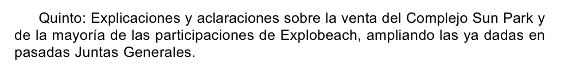
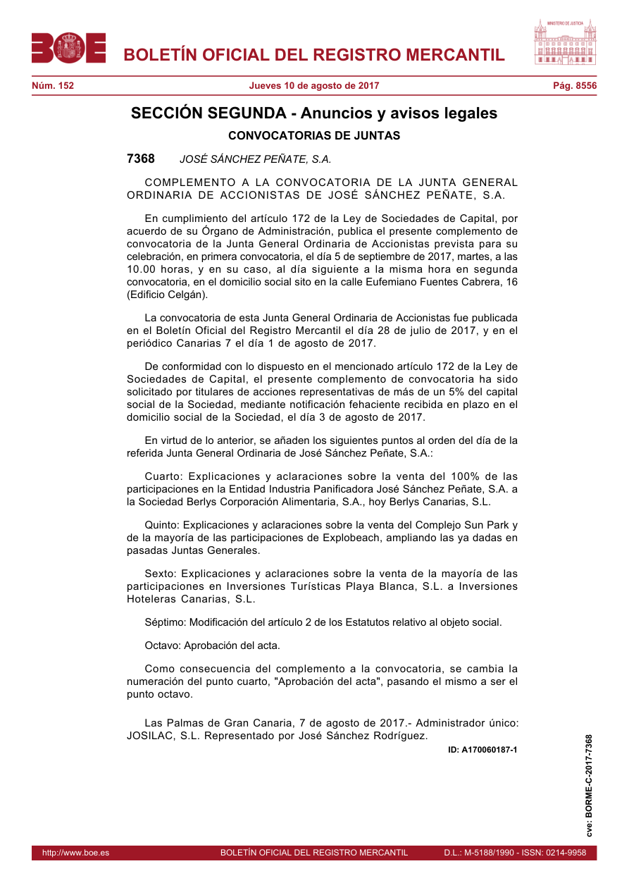

The incident: a published request, not a sale deed
BORME-C-2017-7368 records a request received on 3 August 2017 from shareholders collectively holding more than 5% of JSP's capital. The notice was signed on 7 August and published on 10 August. The meeting was scheduled for 5 September, with a second call on 6 September. The requesting shareholders are unnamed; actual occurrence and answers require the minutes.
Item Five requests expanded earlier explanations about Sun Park and the majority of Explobeach. The 100% in Item Four concerns the bakery transaction; Item Six concerns another corporate transfer. Purchasers and percentages must not be exchanged between those transactions.
Images of the official source
These are unannotated renderings of the official PDF, not AI-generated images or new certifications. The crop preserves the whole of Item Five; the complete page preserves the other items, dates and named signatory.


Preserved native PDF · BOE original · Provenance and checksums
People, entities and professionals
The current canonical manifest takes precedence. Proposals not yet admitted are displayed as pinned candidates, not as new admissions or confirmed identities. Short names, dated capacities and unknown references are preserved.
Loading the public index and checking references…
Unresolved identities, aggregates and context
Catalogue of 64 documents and references
Copies, deposit notices, secondary sources and derivative work products are not independent originals. The IDs connect the analysis without republishing private originals.
Dated connections without merging estates
Monte Lanza's 2015–2018 corporate liquidation and JSP/Celgán's concurso 440/2021 are distinct. Powers, acts, knowledge and any alleged omissions are assessed person by person and date by date.
Complete preserved document digest
The original English working text is preserved in full. Preparation and WORKER-state references describe its creation stage; they do not replace a subsequent deployment record.
Outstanding evidence and limits
The 2016 instrument distinguishes 8499, conditionally allocated to the Community, from 8500, with three conditional creditors. 8498 follows a separate lead. No completed Community→CAM chain is supplied by inference. Patricia is the speaker of the notes; Asunción is the reported source of part of the account, not the author of a personally adopted statement here.
Complete public record and privacy
The register preserves all public dispositions. The 16 withheld property-source names and private tourism-complainant annex are not published here. The 52 events, 19 interests and 50 relationships of the larger private model are not represented as fully contained in this reference index.